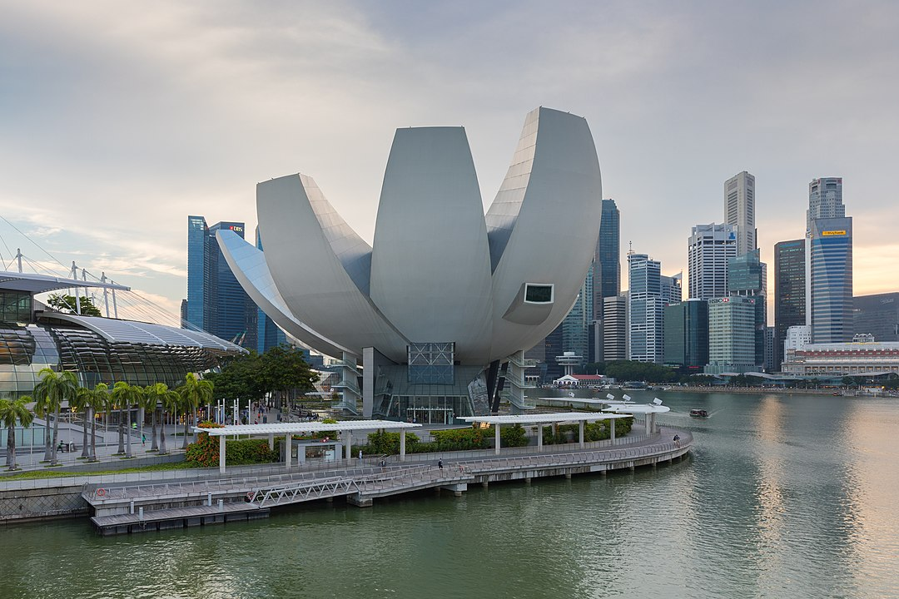
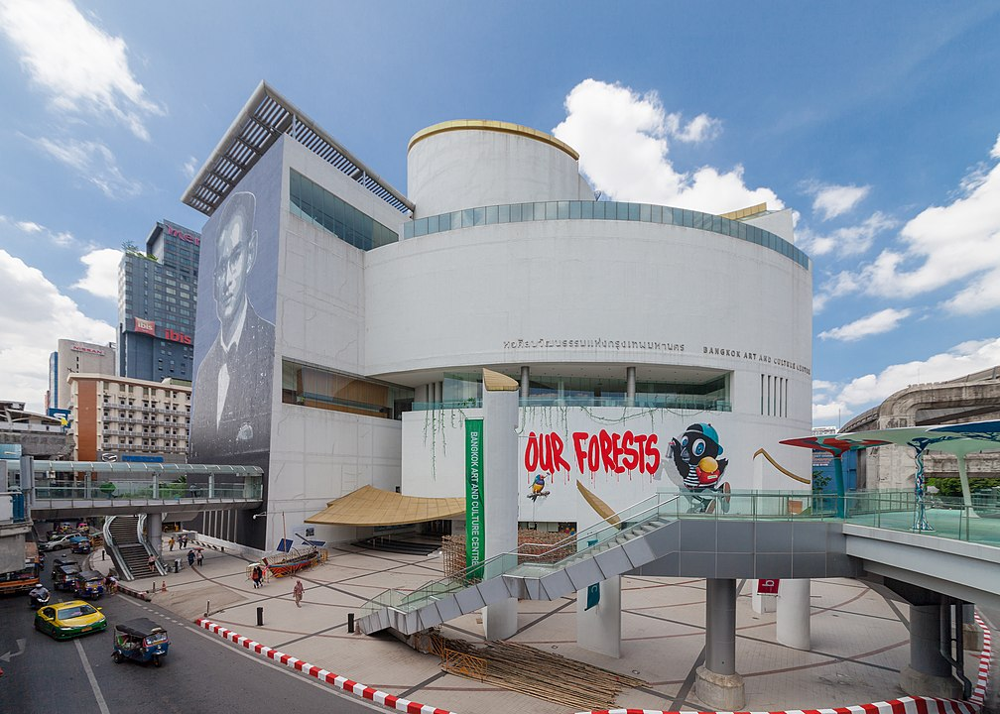
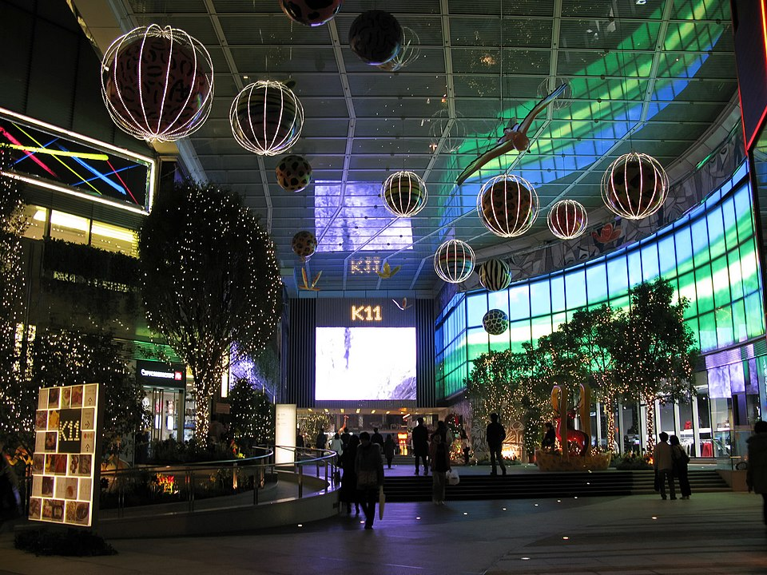

Jan 8 - 2021 - 8 min read
Adapted From: https://de51gn.com/25-contemporary-museums-in-asia-known-for-their-spectacular-architecture/
Introduction
Museums give countries, both developed and emerging, the ultimate cultural and education advantage.The number of museums and cultural institutions being constructed in Asian countries has recently increased, with many of them designed by well-known architects. This article will take a look a some of the emerging museums.
ArtScience Museum, Singapore
The building is made up of two parts: a giant lily pond at the bottom, surrounded by the waters of Marina Bay, and a flower-like structure made up of ten petals, created by the geometry of spheroids of varying radii that appears to float above the landscaped pond base.The museum has a permanent TeamLab installation in addition to new exhibits.

Bangkok Art and Culture Centre
The 10-story museum, designed by Robert G Boughey, an American architect based in Thailand, is one of the few contemporary art spaces in the booming area, which is renowned for its shopping, culinary offerings, and nightlife.
K11 Musea, Hong Kong
K11 MUSEA, the world's first cultural-retail destination, is located in the heart of Hong Kong's art and design district, Victoria Dockside. K11 MUSEA, which opened in August 2019, is imagined as a Silicon Valley of Arts, putting together cross-disciplinary activities in architecture, sculpture, craft, culture, fashion, gastronomy, and sustainability.